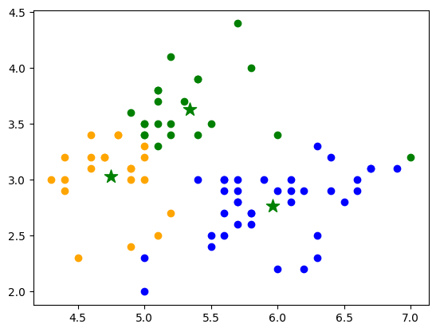

Quantum K-Means
QKMeans Algorithm
- class QKMeans(n_clusters=6, quantum_instance=None, *, init='kmeans++', n_init=1, max_iter=30, tol=0.0001, random_state=42)[source]
Bases:
sklearn.base.ClusterMixin,qlearnkit.algorithms.quantum_estimator.QuantumEstimatorThe Quantum K-Means algorithm for classification
Note
The naming conventions follow the KMeans from sklearn.cluster
Example
Classify data using the Iris dataset.
import numpy as np import matplotlib.pyplot as plt from qlearnkit.algorithms import QKMeans from qiskit import BasicAer from qiskit.utils import QuantumInstance, algorithm_globals from sklearn.datasets import load_iris from sklearn.model_selection import train_test_split seed = 42 algorithm_globals.random_seed = seed quantum_instance = QuantumInstance(BasicAer.get_backend('qasm_simulator'), shots=1024, optimization_level=1, seed_simulator=seed, seed_transpiler=seed) # Use iris data set for training and test data X, y = load_iris(return_X_y=True) num_features = 2 X = np.asarray([x[0:num_features] for x, y_ in zip(X, y) if y_ != 2]) y = np.asarray([y_ for x, y_ in zip(X, y) if y_ != 2]) qkmeans = QKMeans(n_clusters=3, quantum_instance=quantum_instance ) X_train, X_test, y_train, y_test = train_test_split(X, y, test_size=0.20, random_state=seed) qkmeans.fit(X_train) print(qkmeans.labels_) print(qkmeans.cluster_centers_) # Plot the results colors = ['blue', 'orange', 'green'] for i in range(X_train.shape[0]): plt.scatter(X_train[i, 0], X_train[i, 1], color=colors[qkmeans.labels_[i]]) plt.scatter(qkmeans.cluster_centers_[:, 0], qkmeans.cluster_centers_[:, 1], marker='*', c='g', s=150) plt.show() # Predict new points prediction = qkmeans.predict(X_test) print(prediction)
[0 0 2 1 0 2 2 0 1 0 1 1 2 2 0 2 0 0 1 2 1 1 2 0 2 2 0 1 0 1 1 1 2 1 1 0 1 0 2 0 0 0 0 2 2 0 2 0 0 0 0 1 0 2 1 1 0 2 0 1 0 0 2 1 1 0 2 1 2 0 0 0 0 0 2 0 0 2 0 0] [[5.96216216 2.77027027] [4.74761905 3.02857143] [5.34090909 3.63181818]]
[0 0 0 1 2 2 2 0 2 2 2 1 0 2 0 2 0 0 1 2]
- Parameters
n_clusters – The number of clusters to form as well as the number of centroids to generate.
quantum_instance – the quantum instance to set. Can be a
QuantumInstanceor aBackendinit – Method of initialization of centroids.
n_init – Number of time the qkmeans algorithm will be run with different centroid seeds.
max_iter – Maximum number of iterations of the qkmeans algorithm for a single run.
tol – Tolerance with regard to the difference of the cluster centroids of two consecutive iterations to declare convergence.
random_state – Determines random number generation for centroid initialization.
- fit(X, y=None)[source]
Fits the model using X as training dataset and y as training labels. For the qkmeans algorithm y is ignored. The fit model creates clusters from the training dataset given as input
- Parameters
X – training dataset
y – Ignored. Kept here for API consistency
- Returns
trained QKMeans object
- predict(X_test)[source]
Predict the labels of the provided data.
- Parameters
X_test – ndarray, test samples
- Return type
ndarray- Returns
Index of the cluster each sample belongs to.
- score(X, y=None, sample_weight=None)[source]
Returns Mean Silhouette Coefficient for all samples.
- Parameters
X – array of features
y – Ignored. Not used, present here for API consistency by convention.
sample_weight – Ignored. Not used, present here for API consistency by convention.
- Return type
float- Returns
Mean Silhouette Coefficient for all samples.
QKMeans Circuit
- construct_circuit(input_point, centroids, k)[source]
Apply a Hadamard to the ancillary qubit and our mapped data points. Encode data points using U3 gate. Perform controlled swap to entangle the state with the ancillary qubit Apply another Hadamard gate to the ancillary qubit. .. parsed-literal:
┌───┐ ┌───┐ |0anc>: ┤ H ├────────────■──────┤ H ├────────M └───┘ | └───┘ ┌───┐ ┌────┐ | |0>: ───┤ H ├───┤ U3 ├───X────────── └───┘ └────┘ | ┌───┐ ┌────┐ | |0>: ───┤ H ├───┤ U3 ├───X────────── └───┘ └────┘- Parameters
input_point – Input point from which calculate the distance.
centroids – Array of points representing the centroids to calculate the distance to
k – Number of centroids
- Return type
QuantumCircuit- Returns
The quantum circuit created
Initializations
- random(X, n_clusters, random_state=42)[source]
Create random cluster centroids.
- Parameters
X – The dataset to be used for centroid initialization.
n_clusters – The desired number of clusters for which centroids are required.
random_state – Determines random number generation for centroid initialization.
- Return type
ndarray- Returns
Collection of k centroids as a numpy ndarray.
- kmeans_plus_plus(X, k, random_state=42)[source]
Create cluster centroids using the k-means++ algorithm.
- Parameters
X – The dataset to be used for centroid initialization.
k – The desired number of clusters for which centroids are required.
random_state – Determines random number generation for centroid initialization.
- Return type
ndarray- Returns
Collection of k centroids as a numpy ndarray.
- naive_sharding(X, k)[source]
Create cluster centroids using deterministic naive sharding algorithm.
- Parameters
X – The dataset to be used for centroid initialization.
k – The desired number of clusters for which centroids are required.
- Return type
ndarray- Returns
Collection of k centroids as a numpy ndarray.